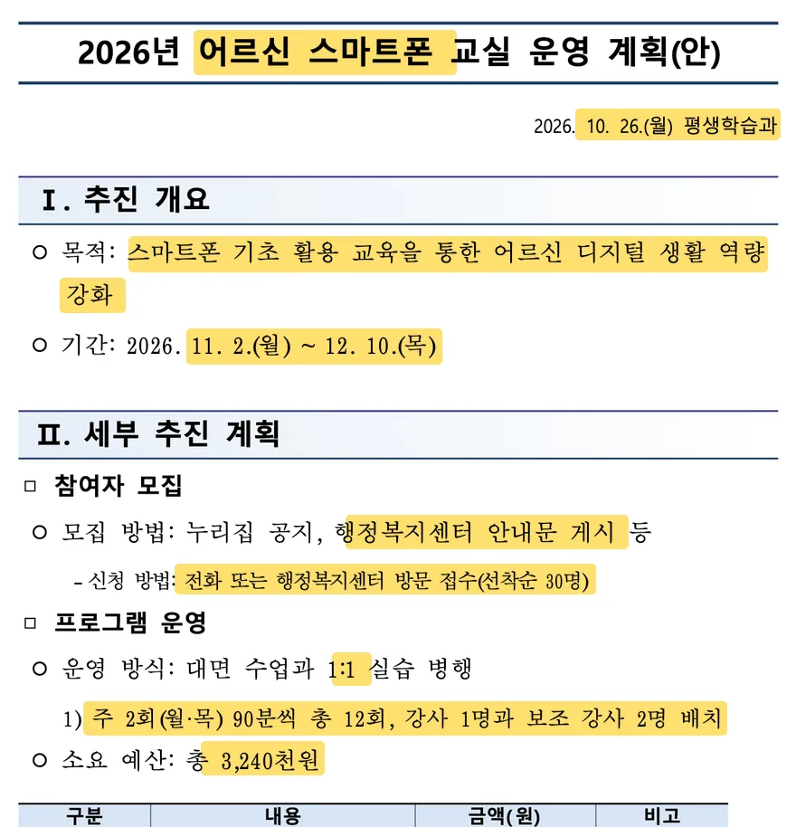
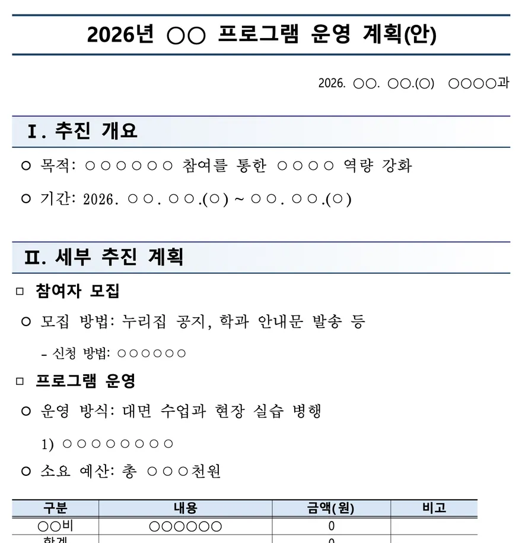

한글 보고서, 양식 그대로 AI가 써 줍니다
지금 열린 claude.ai 화면에서는 파일 받기가 막혀 있습니다. 시작하기 전에 화면 맨 위 제목 「한글 척척」을 눌러 「복제」(Duplicate)를 고르세요. 열리는 내 복사본에서는 한글 파일을 받을 수 있습니다.
설치·가입 없음 · 한글 파일과 사진은 이 컴퓨터 안에서만 · 쓰시는 AI에는 이름·연락처를 가린 글만


손잡이를 밀어 보세요. 노란 곳이 채운 내용입니다.
예시 넣기:
사진 칸에 번호 차례로 들어갑니다. 사진은 AI에 보내지 않습니다.
출석부·만족도 결과·회의 메모처럼 근거가 되는 파일(.hwpx .hwp .txt .csv). 글자만 읽어서 씁니다.
이름·학번·전화번호처럼 보이는 말은 AI에 보내기 전에 [이름1], [전화1]처럼 바꾸고, 받은 파일에서는 원래대로 되돌립니다. 가리지 않아도 되는 말은 체크를 끄세요.